Class 8. Introduction to R
- Supplemental background reading for next class(es):
- Conroy and Peterson-Chapter(s) 3, 5 (77-116)
- Assignment due: Homework-01: Personal means network
- Submit as a PDF you can use whatever you would like to create the figure (e.g., word, powerpoint). Create a means objectives network (maximum 25 objectives please) of your personal career aspirations. Identify your fundamental objectives and be sure to include two or more means objectives for each fundamental objective. DO NOT FORGET to use the key phrases.
- Due by Friday by 5 pm
- SUBMIT PDF TO: https://dropitto.me/WFA8433 The upload password is ‘critter’ Be sure to name the file as follows “lastname-homework-01.pdf”
- Group work: Continue discussing potential class projects
- Link to class deck PDF
- Link to class recording
- Today’s R script Class-08.R
Introduction to R
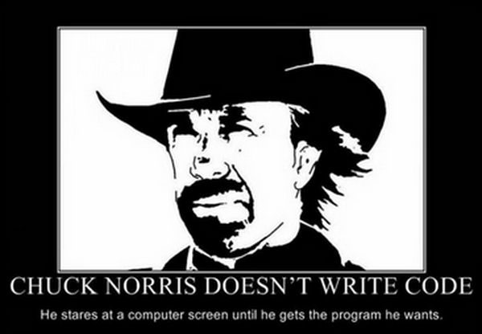
Maybe this is your first foray into the world of programming or maybe you just don’t know R… yet. Are you… scared? I promise, recurring Chuck Norris memes will be the scariest thing you experience in this course, with the exception of our mugs, of course. Ok, so lets get to it and lay down some ground rules (arrr… more like guidelines) :
There are no stupid questions when it comes to programming problems, so stop us and ask questions!!
Annotate, annotate, annotate ALL programs that you create whether in or out of class (more later today).
The only– yes ONLY way to learn to use a programming language is to practice, practice, practice. We will provide example exercises for you to practice your skills, but you should consider these the minimum amount of practice you should be undertaking.
R is an open-source, objected-oriented language. When we say R is object-oriented, what we mean is that everything that R does or contains is based on objects. Objects in R include:
- numerical values letters or other symbols that stand for numerical values that can range from single values (often called scalars) to entire databases (defined in R as dataframes)
- other structures, such as lists;
- functions, series of mathematical or statical operations; and
- the results of statistical analyses (theses often can be confusing– but not to worry).
For those of you experienced with other programming languages (e.g., C, Fortran), object orientation can initially be confusing. In this course, the structure of objects will be very simple and straightforward; as we get more familiar with R and get into more complex problems the power of the object-oriented approach will hopefully become clearer.
THE R INTERFACE
Unless you are a total geek, you will more than likely be using a graphical user interface (GUI, pronounced–’gooey“) to work in R. Fortunately, you have two options (ok, probably more that two but we will only discuss these two). The first comes with the standard R download from the Cran website. You can assess this by clicking on the”Rgui.exe" file in the “bin” folder that was created during the R install. In the computer lab, R should be listed in the program files list (hint: click the windows explorer icon). Open the standard R gui and take a look. It should look something like this (you may have a different version though):
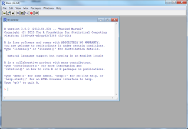
It’s fairly bare bones, but quite useful. The other alternative to this GUI is Rstudio, which also is open source and freely available. Both interfaces can do roughly the same things though Rstudio has some additional functions that we think that you– as nubies– will prefer (JP definitely prefers Rstudio). Everything we cover in this course can be performed using the standard R GUI or Rstudio with the exception of a few procedures that we will cover in this lesson. Before we go over Rstudio, lets explore the standard GUI first. Above, shows the R console, which displays the results of analysis and messages associated with any code that is either entered in the command line (after the red arrow “>”) or using something called a script. A script is a file that contains a bunch of R code that you can save and use over and over again. We will mostly be using scripts throughout the course, but for now lets just use the command line.
We assume that you all know the mathematical operators that we will be using in the course but just in case:
| Operator | Description | Example |
|---|---|---|
| + | addition | x plus y is x + y |
| - | subtraction | x minus y is x - y |
| * | multiplication | product of x and y is y |
| ^ | exponentiation | y raised to the x power is y^x |
| \ | division | dividing y by x is y/x |
As we mentioned, you can enter commands directly in the R console. For example type in 2+2 and hit return. You should get something like that below.
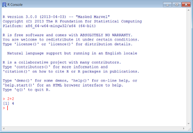
You can see the command that we typed in before the arrow “2+2” and the result below, 4. Try a few more commands for grins– we’re computing! Notice that the command console gave us the answer right after we submitted the command.
What about about if we want to save the result of the operation? Well, we need to assign the answer to an object (your first!). We do this by using as assignment operator, either an equal sign “=” or an arrow followed by a dash “<-”. For many of the objects we will be using, these two assignment operators can be used interchangeably, BUT (warning warning!!) later on we will find that this may not work of all objects. Lets create an object that is the product (reminder: multiply) of 10 and 2.5. Remember the product operator is the asterisk “*" and assign the value to an object X using the command console. Do the same for an object Y but use the other assignment operator. For example,
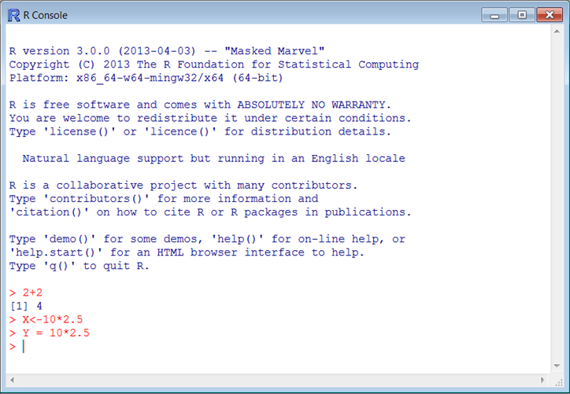 You should notice that the results of the operation were not printed in the console– that’s because they were assigned to each object. If we want to see the result, we simply type Y or Y in the console and the results should be printed, For example,
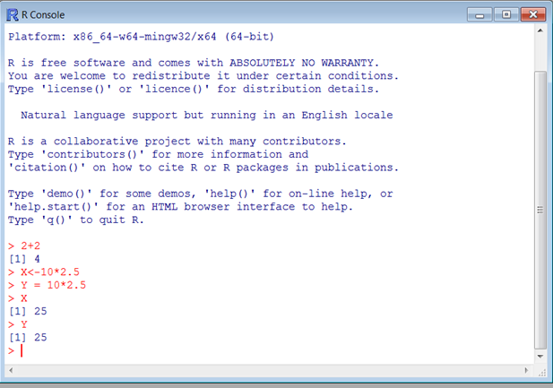 Both values should be the same and they are. Objects are not restricted to single characters and can consist of combinations of numbers, letters, period, and underscore. Note that special characters (e.g., #, $, @, and commas) are used for other specific purposes, so stick with, “a,b,c,yx,dog,cat…”, “1,2,3,55,19…”, “.”, and “_" when naming objects. For example, we could have used “jims.Y” or “jims_X” rather than X and Y. This makes it easier to keep track of data. For example, the object “fish.wt” could contain fish weights. WARNING, WARNING object names are CASE SENSITIVE, i.e., typing lowercase x in the command window will result in the following error:
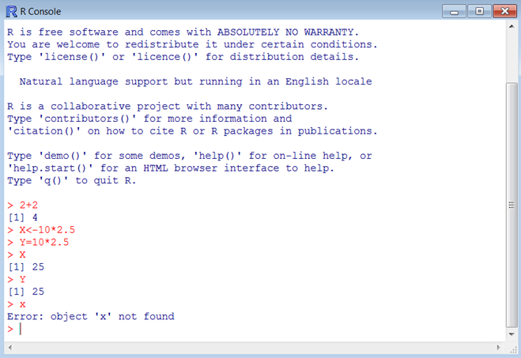 More often than not, forgetting this fact can lead to real headaches. Our suggestion: start now to establish a naming convention for yourself, such as only use lowercase for certain types of data and numbers for various versions of the object. As you might have guessed, we can perform operations of objects. To convince yourself, perform a few operations using X and Y, go ahead and assign the result of one of the operations to an object names “this.is.the.best.course.ever”. For example,
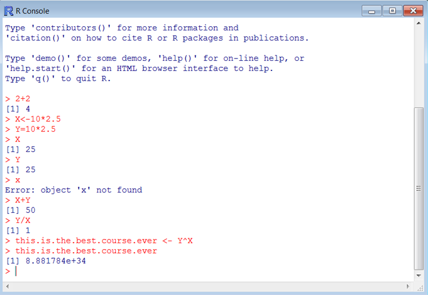 The neat thing about the console is that you can recall commands simply by using the up and down arrows on your keyboard. Go ahead and put the cursor in the command window and press the up arrow. The last command should reappear for the above example this.is.the.best.course.ever should reappear. You can continue to us the up and down arrows to scroll through your previous commands.
The objects that we created are stored in the working directory. To list the contents of the working directory, we simply type “ls()” in the command window. For example,
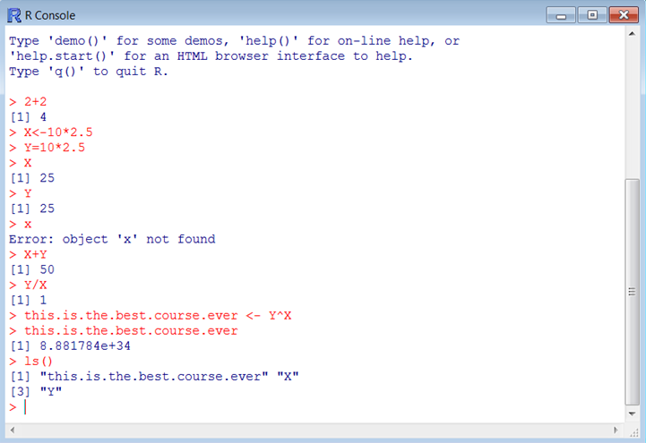 alternatively, we can go to the “Misc” menu at the top of the GUI and select “List objects”:
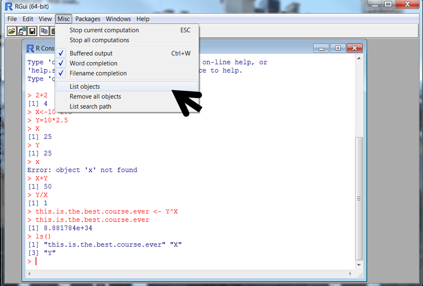
For now, it may be easier to use the menu driven commands. Eventually, you will find that it will be better to learn and use the commands. We see here that it listed “X”, “Y” and “this.is.the.best.course.ever”. If we wanted to get rid of one or more of these objects, we use the remove command as “remove(object name)” or for short “rm(object name)” where “object name” is the name of the object you want to remove. If you want to remove more than one object, you separate the object names using a comma. Lets remove “X” and “Y” and list the contents of the working directory:
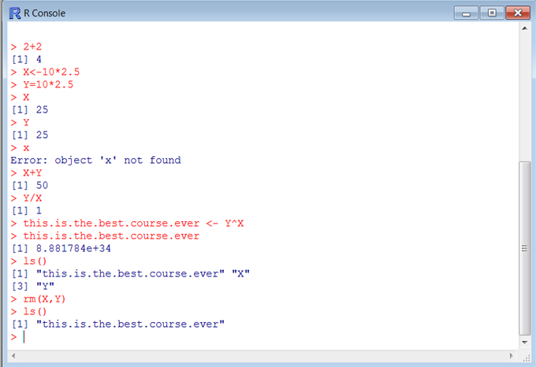 Not too shabby. Before we go any further, lets talk R scripts. An R script is a text file that contains R commands (and data if you want). Using a script is infinitely easier than using the console and typing in commands, so lets get started. In the standard R GUI, we click on “File” and select “New script” or use Ctrl-N:
 The new script is shown in the window above. You can save and name the Script anyway you want– that said, we strongly recommend using “.r” or “.R” as the file name extension. We will be using that convention throughout this course. To create a script, simply type the commands into the script and submit to R. In the script, type in the following commands
The new script is shown in the window above. You can save and name the Script anyway you want– that said, we strongly recommend using “.r” or “.R” as the file name extension. We will be using that convention throughout this course. To create a script, simply type the commands into the script and submit to R. In the script, type in the following commands
fish.wt = 10
fish.length = 150
fish.condition = fish.length/fish.wt
fish.condition## [1] 15ls()## [1] "fish.condition" "fish.length" "fish.wt"Then select the commands and right click your mouse as:
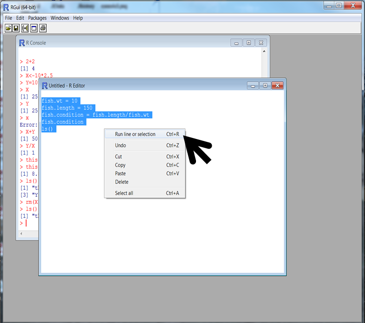
Then choose “Run line or selection” (you could also hit Ctrl-R) and you should get the following in the console.
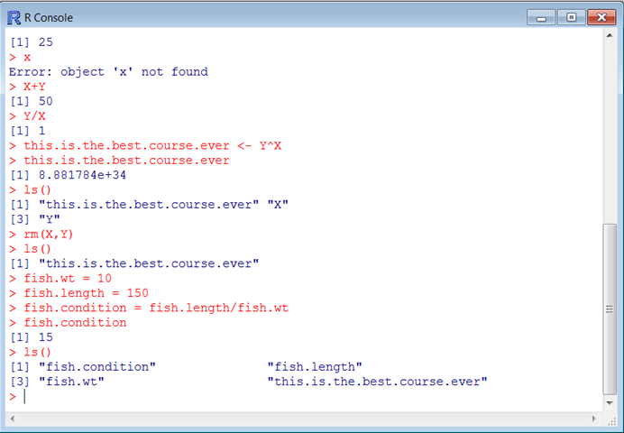
# This program calculates the goofy Peterson and Colvin condition factor
fish.wt = 10
fish.length = 150
## here's the formula..., pure genius
fish.condition = fish.length/fish.wt
fish.condition## [1] 15ls()## [1] "fish.condition" "fish.length" "fish.wt"Everything to the right of the # is ignored by R when you submit the script. You can use more than one # as shown above. Using the comment character “#” also can be used to turn off parts of programs. For example, adding a # before fish.condition:
# This program calculates the goofy Peterson and Colvin condition factor
fish.wt = 10
fish.length = 150
## here's the formula..., pure genius
fish.condition = fish.length/fish.wt
#fish.condition
ls()## [1] "fish.condition" "fish.length" "fish.wt"stops R from printing out fish.condition after it is calculated. Go ahead and try it. As we will find later, this feature is very useful for debugging programs. We heartily recommend using this feature to take notes during the course too. Go ahead and save this script, we may use it later.
As we discussed earlier, the objects we created are written to the working directory. If you save the contents of the working directory (think: “massive database that I worked on for hours”), they will always be available when you start R. But where is the working directory? By default, it’s more than likely placed somewhere you don’t want it to be (but see profile below). Therefore, it’s always good practice to set the working directory at the beginning of your R session. We do this using the “setwd(path)” command, where path is the windows path to the folder where you want to write and read things. For example, lets say that I wanted to save this session to my memory stick and the memory stick was assigned as the “G” drive. I want to save it in a folder “RRRR” inside of “Jims class stuff”:
setwd("F:/lab1/RRRR") ## NOTICE USE OF FORWARD SLASH
# This program calculates the goofy Peterson and Colvin condition factor
fish.wt = 10
fish.length = 150
## here's the formula..., pure genius
fish.condition = fish.length/fish.wt
fish.condition## [1] 15ls()## [1] "fish.condition" "fish.length" "fish.wt"Or you could use the double back slash. R will not recognize single backslash format.
setwd("F:\\lab1\\RRRR")## NOTICE USE OF DOUBLE BACKSLASH
# This program calculates the goofy Peterson and Colvin condition factor
fish.wt = 10
fish.length = 150
## here's the formula..., pure genius
fish.condition = fish.length/fish.wt
fish.condition## [1] 15ls()## [1] "fish.condition" "fish.length" "fish.wt"To save the all of the contents of your working directory you ca use “save.image(file =”myfilename.Rdata“)” command. This command saves everything to “myfilename.Rdata” where myfilename would be your file name. Alternatively, you can save specific objects in the working directory to a file using “save(file =”myfilename.Rdata“,list = c(names of objects in quotes separated by commas))”. For example, let say that we wanted to save everything we created using the above script to a file called “firstRclass.Rdata”:
setwd("F:\\lab1\\RRRR")
# This program calculates the goofy Peterson and Colvin condition factor
fish.wt = 10
fish.length = 150
## here's the formula..., pure genius
fish.condition = fish.length/fish.wt
fish.condition## [1] 15ls()## [1] "fish.condition" "fish.length" "fish.wt"### Here's where we save everything
save.image(file = "firstRclass.Rdata")This would save all of the objects to firstRclass in the folder specified with the setwd command above. Alternatively, let’s say that we wanted to only save fish.wt and fish.condition. We would specify:
### Here's where we save just 2 objects
save(file = "firstRclass.Rdata", list = c("fish.condition","fish.wt"))Whew, we saved all of that work, turned off the computer, and headed to Bombs Away for happy hour. How do we access the objects that we saved? No problem, we use the “load” command, but first we have to set the working directory.
load("firstRclass.Rdata")You also may encounter another method of specifying the current working directory in the file path using “./” before the filename. For example:
load("./firstRclass.Rdata")In the standard R GUI and Rstudio (more below), we won’t have to use “./” but it can come in handy later.
Another way we could have loaded the file was to specify the path inside the load command.
# Load objects from existing file, full path edition
load("F:\\lab1\\RRRR\\firstRclass.Rdata")RSTUDIO
Hey– what about Rstudio? We haven’t forgot and best of all, you haven’t wasted your time. Almost everything we just learned is applicable to Rstudio. You still use scripts, the same commands, and have to load packages. The benefits of Rstudio is that the added additional windows like functionality. R studio is just a useful GUI, so R must be installed before installing Rstudio. Once you install Rstudio, open it and it should look something like this:
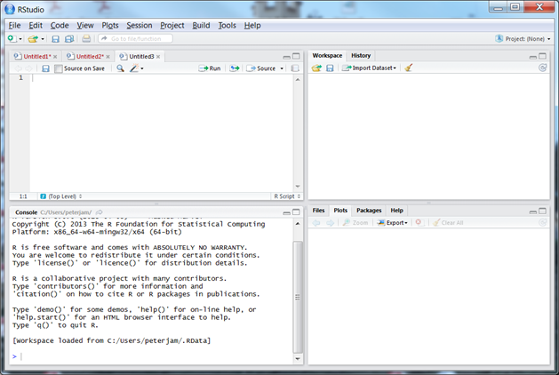
Rstudio allows you to customize your environment and use multiple panes. Here I have 4 panes shown. Upper left is an Untitled R script; upper right will display all R objects created or read in the R session (workspace tab) or all of the commands used (History tab); the lower left is the console (just like the base R GUI); and the lower right can display the installed packages, help files, plots, and all files in the working directory. These windows can be moved around or closed. For grins, let’s install xlsx package.
R objects, attributes and working with data.frames, vectors, matrices, and lists
No matter if you are an expert or a novice, one of the most frustrating aspects of R computing can be working with objects, specifically – different types of objects. Going back to week 1, we learned that R is an object oriented language and that we manipulate objects in R to analyze data, simulate processes, create graphics, and write files. Sounds all rather simple, right? Well, it is… and it isn’t. There are different types of objects in R and many operations (e.g., addition, subtraction, etc.) can only be performed on specific types of objects. Therefore, it is important to know the different types of objects, how to create a query in R to identify the type of object, and how to change (coerce) the type of object. In this lesson, we will learn these skills and others.
CREATING AN R OBJECT
In week 1, we learned to create a simple object consisting on a single number using one of two assignment operators = and <-. For example, if we enter the code below we create an object Z and assign it a value of 10.
# using the = operator
Z= 10
# or using the assignment “<-“ operator
Z <- 10These single value objects are often referred to as scalars if they represent numeric values (i.e., a single number). To create an object consisting of several numbers (often called a vector), you need to use the collection operator c(numbers in here separated by a comma). For example, let’s create a vector consisting of the numbers 1 through 5.
# create vector
a_vect <- c(1,2,3,4,5)
# print out vector
a_vect## [1] 1 2 3 4 5As we will learn later, we can perform operations on entire vectors and individual elements or groups of elements of vectors. For example, we can create another vector that contains the values of a_vect divided by ten using the following:
# divide all the values in the vector by 10
new_vect <- a_vect/10
# print out vector
new_vect## [1] 0.1 0.2 0.3 0.4 0.5Vectors consist of elements that are indexed by the order in which that occur. For example the third element of new_vect is 0.3. We can refer to the elements of a vector using a bracket [] with the number in the bracket referring to the element in the vector. For example, let’s print out the 4th element of new.vect:
# print out 4th element
new_vect[4]## [1] 0.4## assign 4th element to another object, fourth
fourth = new_vect[4]We can also refer to multiple elements in a vector. For example:
# print elements 3, 4, and 5 in new.vect
new_vect[3:5]## [1] 0.3 0.4 0.5Notice above that we used a colon (:) to refer to a sequence of elements from 3 to 5. This sequence notation will come in handy and has other uses. For example, let create a vector biggy consisting of integers (whole numbers) from 10 to 20:
## create vector
biggy = c(10:20)
#print out vector
biggy## [1] 10 11 12 13 14 15 16 17 18 19 20Notice that it uses the collection operator c() and the list separator :. There are all kinds of neat functions in R for creating vectors. Below are a few that we find useful with a description of each in the comment above.
# create a vector with a sequence of values from 1.25 to 8.75 by increments of 0.25
wow <- seq(1.25, 8.75, by = 0.25)
# create a vector with a sequence of 13 evenly spaced values between 9 and 14
double_wow <- seq(9, 14, length = 13)
# create a vector of 13 elements with the same value 41
double_dog_wow <- rep(41,13)
# create a vector consisting of two sequences of 1,2,3,4
triple_dog_wow <- rep(1:4, 2)Be sure to try each of these methods and print out the results. There are other uses for these functions so be sure to use help() to see what is possible.
You may be wondering, what if I want to select non-consecutive elements of a vector? No problemo, we have a list of the value inside a the collection operator that is inside of the brackets. You’re probably asking: What the @#$%% are you guys talking about? Here– let’s show you below. First, let’s create a vector consisting of values from 1 to 10 by increments of 0.5, then select the odd numbered elements.
# create a vector with a sequence of values from 1 to 10 by increments of 0.5
nuts <- seq(1,10, by = 0.5)
# select the odd numbered elements of nuts and put them into a vector wing.nuts
wing_nuts = nuts[c(1,3,4,5,7,9,11,13,15,17,19)]Typing in all of those numbers in the list to get wing.nuts was a pain. Notice that the numbers consisted of integers that went from 1 to 19 by increments of two. Above, we learned that we could generate a sequence of numbers using seq. Hmm wonder if we can combine these two ideas…let’s try:
# select the odd numbered elements of nuts using seq and put them into a vector wing.nuts
wing_nuts = nuts[seq(1,19,2)]Wow that worked! There are all kinds of tricks like this that can be used in R and the only way to discover them is to try different things. Use your imagination and don’t be afraid, try something else. Seriously— we’re waiting here till you try to combine a couple of commands.The worst that could happen is the dreaded red error message. Trial and error is how most of us learn these tricks.
CREATING MATRICES
We just learned to create single value (scalars) objects and a vectors consisting of a single row or single column of values. Matrices consist of multiple values contained in multiple rows and columns. For example, the matrix below consists of 4 rows and 3 columns and can be referred to as a 4 by 3 matrix (or 4x3 matrix):
| Column 1 | Column 2 | Column 3 |
|---|---|---|
| 1 | 2 | 3 |
| 4 | 5 | 6 |
| 7 | 8 | 9 |
| 10 | 11 | 12 |
We can create this matrix in R using the matrix function (who’d a thunk it?). First, let’s create a vector with values from 1:12.
### create the vector the hard way
vect = c(1,2,3,4,5,6,7,8,9,10,11,12)
### create the vector the easy way
vect = c(1:12) Now we can use the matrix function, but note that we need to specify the number of rows or columns using the nrow or ncol options, respectively. We may need to specify one more thing. Let’s see what happened without it.
### create the vector the easy way
vect <- c(1:12)
## create the 4 by 3 matrix using the values in vect
the_matrix = matrix(vect, nrow = 4)
## create the 4 by 3 matrix using the values in vect
the_matrix = matrix(vect, ncol = 3)Notice that the values are in order going down the first column 1-4. This is not quite what we have above where the values are in order across rows. This is because the default for the matrix function is to place values from the matrix by column. This mean that the first 4 elements on vect are the values in the first column, the second 4 values in vect are in the second column and so forth. We can get a matrix like the original one above specifying byrow = TRUE option in the matrix function as:
## create the 4 by 3 matrix using the values in vect
the_matrix = matrix(vect, ncol = 3, byrow = TRUE)
## print out the matrix
the_matrix## [,1] [,2] [,3]
## [1,] 1 2 3
## [2,] 4 5 6
## [3,] 7 8 9
## [4,] 10 11 12This looks just like the above (original) matrix. Similar to vectors, we can refer to elements in a matrix using numbers inside if brackets corresponding to the row and column contain the element separated by a comma: matrix.name[row,column]. The first number always refer to the row copy and paste this code in R and see what happens:
### print out value in row 2, column 3 in jims.matrix
the_matrix[2,3]## [1] 6## print out the values in rows 2 and 3 in the first column
the_matrix[2:3,1]## [1] 4 7## print out the values in rows 1 and 3 in the second column
the_matrix[c(1,3),2]## [1] 2 8## print out all the rows for columns 1 and 3, notice blank for row
the_matrix[,c(1,3)]## [,1] [,2]
## [1,] 1 3
## [2,] 4 6
## [3,] 7 9
## [4,] 10 12## print out all the columns for row 2, notice blank for column
the_matrix[2,]## [1] 4 5 6You should notice the use of the sequence operator : and collection operator c() to refer to specific rows and columns. You should also notice that you refer to all rows or all columns by leaving the value for the row or column blank. We can also change the values of specific elements of a matrix (or vector) using the above notation. For example,
## change the value in row 2, column 1 to -99
the_matrix[2,1] <- -99
## print out matrix
the_matrix## [,1] [,2] [,3]
## [1,] 1 2 3
## [2,] -99 5 6
## [3,] 7 8 9
## [4,] 10 11 12## change the values in rows 1 and 4, column 3 to missing, remember NA is missing
the_matrix[c(1,4),3] <- NA
## print out matrix
the_matrix## [,1] [,2] [,3]
## [1,] 1 2 NA
## [2,] -99 5 6
## [3,] 7 8 9
## [4,] 10 11 NA## change the values in row 4, column 2 to the sum of values in row 3, columns 1 and 2
the_matrix[4,2] <- the_matrix[3,1] + the_matrix[3,2]
## print out matrix
the_matrix## [,1] [,2] [,3]
## [1,] 1 2 NA
## [2,] -99 5 6
## [3,] 7 8 9
## [4,] 10 15 NAGo ahead and try different things, but be forewarned that any operation on a missing value (NA) will result in NA.
WORKING WITH CHARACTER VALUES AND STRINGS
So far, we have only assigned numeric values and missing values to R objects. Many times we may wish to assign characters (e.g., a, b, c) or a string of characters (dog, cat) to an R object. For example, we may want a species or site name. To distinguish numeric and character variables, we place the latter (character) inside single quotes. For example, let’s create an R object species and assign it a value dog
## create species assign "dog"
species<- 'dog'
#print out
species## [1] "dog"Similar to numeric values, we also can create a vector that contains several strings or character values using the collection operator. Note that we must use double quotes in place of single quotes to delineate the character strings.
## create species.vect and assign pet names
species_vect <- c("dog","cat","hamster")
#print out
species_vect## [1] "dog" "cat" "hamster"There also are neat tricks for working with characters, similar to tricks with numeric values. For example, let’s say I want to create a vector containing the letters a to g in order.
# create vector alphabet the hard way
alphabet <- c("a","b","c","d","e","f","g")
#print it out
alphabet## [1] "a" "b" "c" "d" "e" "f" "g"# create vector alphabet the easy way
alphabet <- letters[1:10]
#print it out
alphabet## [1] "a" "b" "c" "d" "e" "f" "g" "h" "i" "j"We also can create a matrix that contains several characters/strings using the matrix function.
## create pet.vect and assign pet names
pet_vect = c("dog","cat","hamster","goldfish","mouse","bird")
## create a matrix
pet_matrix = matrix(pet_vect, ncol = 3, byrow = TRUE)
## print it out
pet_matrix## [,1] [,2] [,3]
## [1,] "dog" "cat" "hamster"
## [2,] "goldfish" "mouse" "bird"Pretty neat, eh? We can refer to specific elements in character/string vectors and arrays using the exact same notation that we used with numeric values. For example,
## print out the values in row 1 column 1 and 3
pet_matrix[1,c(1,3)]## [1] "dog" "hamster"## print out all the rows for columns 1
pet_matrix[,1]## [1] "dog" "goldfish"Try some other combinations of rows and columns just to get the hang of it.
The preceding may have spawned an idea, maybe I can create a matrix with numeric values and characters. Let’s try that Ok, we want to create something that looks like this matrix:
| Column 1 | Column 2 | Column 3 |
|---|---|---|
| a | 1 | 5 |
| b | 2 | 6 |
| c | 3 | 7 |
| d | 4 | 8 |
To do this, first create a vector that contains all of these elements
# the hard way
trial<- c("a","b","c","d",1,2,3,4,5,6,7,8)
#print it out
trial## [1] "a" "b" "c" "d" "1" "2" "3" "4" "5" "6" "7" "8"#easier way
trial<- c(letters[1:4],1:8)
#print it out
trial## [1] "a" "b" "c" "d" "1" "2" "3" "4" "5" "6" "7" "8"Did you notice anything interesting when you printed out the vector? Maybe you noticed the fact that the numbers that printed out had double quotes around them? This means that R is treating numeric variables just like characters. If fact, a vector or a matrix cannot contain mixtures of numeric and character variables.
Just to emphasize: A vector or a matrix cannot contain mixtures of numeric and character variables in R.
R automatically treats all of the elements as character variables. What does that mean???? Before we investigate that, let’s finish what we started and create the matrix with the trial vector. We will use the matrix function to create the matrix. We can see above that we want 3 columns so ncol = 3 we also see that we want the first 4 elements of trial to be the first column of the matrix, so we want the function to place elements in the matrix by column and byrow = FALSE:
## create mixed up matrix
trial_n_error <-matrix(trial,ncol = 3, byrow = FALSE)
# print it out
trial_n_error## [,1] [,2] [,3]
## [1,] "a" "1" "5"
## [2,] "b" "2" "6"
## [3,] "c" "3" "7"
## [4,] "d" "4" "8"Just like the before, R put double quotes around the numbers. That is, it considers the numbers in columns 2 and 3 to be characters. Ok, now we are ready to address: what does this mean???? We learned above that we can perform operations on specific elements of a vector and matrix. Let’s see what happened when we attempt to add columns 2 and 3:
## add columns 2 and 3 on trial.n.error matrix
trial_n_error[,2] + trial_n_error[,3]after submitting this code to R you should have gotten
Error in trial.n.error[, 2] + trial.n.error[, 3] : non-numeric argument to binary operator
This is because R thinks the numbers are letters. We can determine the type and properties of objects using several R functions. Among the most useful functions is typeof. Go ahead and find out what the function does using help, i.e., help(typeof). You should see its syntax and various uses. Let find out what type object trial_n_error is.
As you should see, the printout in the console indicates that the objects is character and the class function tells us that it is a matrix. Try using the typeof and class functions on some of the other objects. For Rstudio users, you should be able to see that the characteristics or each object in the workspace in the workspace window.
We can use other functions, in particular the is. functions, to determine the type of object here are two is. functions below:
## is trial.n.error a numeric matrix
is.numeric(trial_n_error)## [1] FALSE## is trial.n.error a character matrix
is.character(trial_n_error)## [1] TRUEWe can change the characteristics of an object (this is caller coercion of an object) using the as. functions. To illustrate, create an object fix that contains columns 2 and 3 from trial.n.error. Then let’s check out the characteristics of the object.
# create new object
fix<- trial_n_error[,2:3]
# what is this type of object
class(fix)## [1] "matrix"# is fix a matrix, notice another is function-- of course!
is.matrix(fix)## [1] TRUE## what are the type of variables in fix
typeof(fix)## [1] "character"## what are the attributes of fix, yes another function
attributes(fix)## $dim
## [1] 4 2The R console should have indicated that fix was a matrix, (is.matrix = TRUE), containing character values, and the dimensions of the matrix, $dim, is 4 by 2. Notice that the characteristics of the fix matrix are the same as the trial_n_error matrix, with the exception of a missing column. This means that the new objected inherited the characteristics of its parent object. This idea of inheritance is a very important concept. Any object that you create from another object will have the SAME characteristics of the first object. Allllrighty, let’s change fix to become a numeric matrix:
# coerce fix to become numeric
fixed <- as.numeric(fix)
#print it out
fixed## [1] 1 2 3 4 5 6 7 8# what is this type of object-- numeric
class(fixed)## [1] "numeric"# is fixed a matrix, -- oh no!
is.matrix(fixed)## [1] FALSE## what are the type of variables in fixed-- yes numeric!
is.numeric(fixed)## [1] TRUEWhat happened? Fixed contain numeric values but is no longer a matrix. It is now a vector. How do we get a matrix back?… maybe the matrix function?:
fixed <- as.numeric(fix)
#print it out
fixed <- matrix(fixed,ncol = 2, byrow = FALSE)
fixed## [,1] [,2]
## [1,] 1 5
## [2,] 2 6
## [3,] 3 7
## [4,] 4 8# what is this type of object-- matrix
class(fixed)## [1] "matrix"Ok, that worked. You also could have created a couple of different ways. Can you think of any? Go ahead any try one or two. We can now add the two columns. In fact we can create a new object as the sum of columns 1 and2
#add column 1 and 2 of fixed
fixed[,1] + fixed[,2]## [1] 6 8 10 12#create a third column in fixed by adding column 1 and 2 of fixed
new_val <- fixed[,1] + fixed[,2]
#print it out
new_val## [1] 6 8 10 12Hey guys, what happened is we coerce letters to make them numeric values? Well, lets try it and find out using the character matrix trial_n_error:
# create vector curious by coercing trial.n.error
curious<-as.numeric(trial_n_error)## Warning: NAs introduced by coercion## print it out
curious## [1] NA NA NA NA 1 2 3 4 5 6 7 8I created numeric values in a vector, but it also assigned the missing values (NA) to the instances where it tried to coerce an actual character. How do we find out is an object contains missing values? Hmmmm… if we want to find out if an object is a character we use is.character, if we want to find out is an object is numeric we use is.numeric, what if we want for found out is something is NA (missing). If you’re thinking is.na then you are correct. Let’s try that:
## are there missing values in curious
is.na(curious)## [1] TRUE TRUE TRUE TRUE FALSE FALSE FALSE FALSE FALSE FALSE FALSE
## [12] FALSENotice that the value is TRUE when the element in curious is NA and FALSE when it isn’t.
The is.na function is very very useful and will come in handy. To illustrate, let’s say that you wanted to replace the missing values with zero or some other default value, say -666, you would use the following:
#replace missing elements in curious with zero
curious[is.na(curious)] <- 0
#print it out
curious## [1] 0 0 0 0 1 2 3 4 5 6 7 8Notice the syntax, R replaces the elements in the vector where is.na(curious) is TRUE. Hmmm maybe this means that any element that meets some criteria can be changed? Let’s try. How about changing all zeros to -999 in other words change all the values where curious == 0 is TRUE.
#replace zero elements in curious with -999
curious[curious== 0] <- -999
#print it out
curious## [1] -999 -999 -999 -999 1 2 3 4 5 6 7 8Finally in this subsection we will address a question in the back of your mind. Can we coerce a numeric variable to become a character variable, why yes! And you can probably guess what function we will be using: as.character.
## create numeric vector num.vect with values 1:15
num_vect = c(1:15)
## print it out
num_vect## [1] 1 2 3 4 5 6 7 8 9 10 11 12 13 14 15# create character vector char.vect by coercing num.vect
char_vect= as.character(num_vect)
## print it out
char_vect## [1] "1" "2" "3" "4" "5" "6" "7" "8" "9" "10" "11" "12" "13" "14"
## [15] "15"Yes, coercion can be a good thing.
DATA FRAMES
It may be a bit confusing that matrices cannot contain both character and numeric values. From week 1, we read in text and excel files and they contained mixtures of character and numeric variables. This is because we used data frames, which can contain both numeric and character values. The only caveat is that the variables in a column must be the same type. For example, a column can consist of either all character/string variables OR numeric values NOT BOTH. So how do we create a data frame? One way is to read in an external file like we did in weeks 1 and 2. Another way is coercing an existing object into a data frame. If you are thinking “I can use as.data.frame” you deserve a gold star… or maybe a beer. Let’s try this with the trial.n.error matrix.
## print out matrix as a reminder
trial_n_error## [,1] [,2] [,3]
## [1,] "a" "1" "5"
## [2,] "b" "2" "6"
## [3,] "c" "3" "7"
## [4,] "d" "4" "8"#create my.dater data frame by coercing trial.n.error
my_dater<- as.data.frame(trial_n_error)
# print it out
my_dater## V1 V2 V3
## 1 a 1 5
## 2 b 2 6
## 3 c 3 7
## 4 d 4 8#what classs of object
class(my_dater)## [1] "data.frame"# is my.dater a data frame-- yes!
is.data.frame(my_dater)## [1] TRUE# is my.dater a matrix -- no!
is.matrix(my_dater)## [1] FALSESo now you have a data frame with default column names V1, V2, and V3. We can change the names of the columns to something more meaningful using the colnames function.
#change column names in my.dater to pixie, dixie, and bud
colnames(my_dater) = c("pixie", "dixie", "bud")
#print it out
my_dater## pixie dixie bud
## 1 a 1 5
## 2 b 2 6
## 3 c 3 7
## 4 d 4 8Recall in week 1 that we can refer to individual columns in a data frame using the $ syntax for example:
#print out the second column dixie in my.data
my_dater$dixie## [1] 1 2 3 4
## Levels: 1 2 3 4#we can also refer to individual columns in a data frame using brackets
#print out the second column dixie in my.data
my_dater[,2]## [1] 1 2 3 4
## Levels: 1 2 3 4So, you can specify elements in a data frame using column names and using a row and column index inside a bracket [], just like a matrix. You should also have noticed something in the console output above.
The Levels thing at the bottom. What the heck is that? It indicates that the R considers the variable type in the dixie column to be a factor, which is a class variable used in an analysis. For example, you might use a factor variable in an ANOVA to represent study site when you test for differences among study sites. We discuss more use of factors later, for now it’s important to note that a factor is basically treated like a character variable in that they are not numbers and cannot be treated as numbers. For example, you cannot add them. To convince yourself, add the columns dixie and bud:
#try to add dixie and bud columns in my.dater
my_dater$dixie + my_dater$bud## Warning in Ops.factor(my_dater$dixie, my_dater$bud): + not meaningful for
## factors## [1] NA NA NA NAWe can determine if a variable is numeric or factor using the class command or an is. function.
# whatclass is dixie
class(my_dater$dixie)## [1] "factor"#is dixie numeric- no!
is.numeric(my_dater$dixie)## [1] FALSE#is dixie a factor- yes!
is.factor(my_dater$dixie)## [1] TRUECommonly Encountered Problems (CEP)
Note that R sometimes changes numeric variables into factors when you read in a dataset. You will be unable to perform numeric operations on these factor variables and you will be quite frustrated! Bottom line: check the data in each column and make sure it is the correct type.
The only way we can change these to numbers is to coerce them. Let’s try first using what you may expect to use as.numeric
# first print out bud
my_dater$bud## [1] 5 6 7 8
## Levels: 5 6 7 8# try to coerce bud to a numeric value
as.numeric(my_dater$bud)## [1] 1 2 3 4Notice that it changed the values 5,6,7,8 to 1,2,3,4. This is a bad thing —> so here’s is the bottom line:
IMPORTANT POINT: when coercing factors to numeric values– you must first coerce them to character variables, then coerce the character variables to numeric variables
The correct way to change numbers is to coerce them, so first as.character then as.numeric
# print out bud
my_dater$bud## [1] 5 6 7 8
## Levels: 5 6 7 8# now coerce as character then to coerce bud to a numeric value
as.numeric(as.character(my_dater$bud))## [1] 5 6 7 8Now let’s fix both dixie and bud columns, be sure to check the class.
# now coerce as character then to coerce bud to a numeric value
my_dater$bud <- as.numeric(as.character(my_dater$bud))
# whats the class-- numeric!
class(my_dater$bud)## [1] "numeric"# is it numeric--yes!
is.numeric(my_dater$bud)## [1] TRUE# now coerce as character then to coerce dixie to a numeric value
my_dater$dixie <- as.numeric(as.character(my_dater$dixie))
# whats the class--numeric!
class(my_dater$dixie)## [1] "numeric"# is it numeric--yes!
is.numeric(my_dater$dixie)## [1] TRUEWasn’t that good fun?
Lists
Lists are the final types of R objects that you will commonly encounter. They also are the most frustrating and (at least for beginners) difficult to work. Lists can contain objects of various types, numeric, character and lists are the default output that is created when you conduct a statistical analysis, such as linear regression. We will discuss using lists resulting from statistical analysis later in the course. For now, let’s go over some of the basics with lists. To create a list we use the.. (wait for it)… list function. Let’s create several different types of objects and combine them in a list.
# create a numeric vector with a sequence of values from 1.25 to 8.75 by increments of 0.25 and print
num_vct <- seq(1.25, 8.75, by = 0.25)
num_vct## [1] 1.25 1.50 1.75 2.00 2.25 2.50 2.75 3.00 3.25 3.50 3.75 4.00 4.25 4.50
## [15] 4.75 5.00 5.25 5.50 5.75 6.00 6.25 6.50 6.75 7.00 7.25 7.50 7.75 8.00
## [29] 8.25 8.50 8.75# create 3 by 4 numeric matrix with a sequence of values from 1 to 6.5 by 0.5 and print
num_mtrx <- matrix(seq(1, 6.5, by = 0.5), ncol = 4, byrow = FALSE)
num_mtrx## [,1] [,2] [,3] [,4]
## [1,] 1.0 2.5 4.0 5.5
## [2,] 1.5 3.0 4.5 6.0
## [3,] 2.0 3.5 5.0 6.5# create a character vector with a through z and print
char_vct <- letters[1:10]
char_vct## [1] "a" "b" "c" "d" "e" "f" "g" "h" "i" "j"# create 2 by 2 numeric with peoples names and print
char_mtrx <- matrix(c("bill", "mary","joe","brenda"), ncol = 2, byrow = FALSE)
char_mtrx## [,1] [,2]
## [1,] "bill" "joe"
## [2,] "mary" "brenda"## create a list that contains all of these objectives
big_list <- list(num_vct,char_mtrx,num_mtrx,char_vct)
## create a name for each object within the big.list and print
names(big_list) <- c("vect_numbrs", "names", "numb_matrx","letters")
big_list## $vect_numbrs
## [1] 1.25 1.50 1.75 2.00 2.25 2.50 2.75 3.00 3.25 3.50 3.75 4.00 4.25 4.50
## [15] 4.75 5.00 5.25 5.50 5.75 6.00 6.25 6.50 6.75 7.00 7.25 7.50 7.75 8.00
## [29] 8.25 8.50 8.75
##
## $names
## [,1] [,2]
## [1,] "bill" "joe"
## [2,] "mary" "brenda"
##
## $numb_matrx
## [,1] [,2] [,3] [,4]
## [1,] 1.0 2.5 4.0 5.5
## [2,] 1.5 3.0 4.5 6.0
## [3,] 2.0 3.5 5.0 6.5
##
## $letters
## [1] "a" "b" "c" "d" "e" "f" "g" "h" "i" "j"Let’s find out what type of object we just created.
## what class is this object
class(big_list)## [1] "list"# what type of object
typeof(big_list)## [1] "list"The last of these functions str() is particularly important and provides information on the objects within the list and the names of the objects, so let’s examine the output:
## new very important function for lists
str(big_list)## List of 4
## $ vect_numbrs: num [1:31] 1.25 1.5 1.75 2 2.25 2.5 2.75 3 3.25 3.5 ...
## $ names : chr [1:2, 1:2] "bill" "mary" "joe" "brenda"
## $ numb_matrx : num [1:3, 1:4] 1 1.5 2 2.5 3 3.5 4 4.5 5 5.5 ...
## $ letters : chr [1:10] "a" "b" "c" "d" ...The above was output to the console resulting from str(big_list). It tells us that big.list contains 4 objects (List of 4), and each object has a name (names are after $). The first ($vect_numbrs) consists of numbers in a vector with 31 elements (num [1:31]), the second ($names) consists of a 2 by 2 matrix of characters variables (chr [1:2, 1:2]), the third object ($numb_matrx) is a 3 by 4 matrix of numeric variables (num [1:3, 1:4]), and the 4th object ($letters) is a character vector with 10 elements (chr [1:10]).
We can access the elements of a list using syntax similar to that is used to access elements within a data frame, using $ and brackets [].
# to access the ‘names’ object in big.list
big_list$names## [,1] [,2]
## [1,] "bill" "joe"
## [2,] "mary" "brenda"# to access the names object the 2nd one in big.list
big_list[2]## $names
## [,1] [,2]
## [1,] "bill" "joe"
## [2,] "mary" "brenda"Hmm looks too easy, right? Better check on the characteristics or each of these objects.
# what is the class of object created using $ in big.list
class(big_list$names)## [1] "matrix"# what is the class of object created using [] syntax in big.list
class(big_list[2])## [1] "list"Woa! The first method ($) produces a matrix and the second a list. This is important because you can’t really do much with a list in terms of common operations (e.g., addition, multiplication, etc.) but you can with matrices and vectors. To illustrate, try multiplying the first object in the list, vect_numbrs, by 5.
#multiply the elements in the first object within the list by 5
big_list$vect_numbrs*5## [1] 6.25 7.50 8.75 10.00 11.25 12.50 13.75 15.00 16.25 17.50 18.75
## [12] 20.00 21.25 22.50 23.75 25.00 26.25 27.50 28.75 30.00 31.25 32.50
## [23] 33.75 35.00 36.25 37.50 38.75 40.00 41.25 42.50 43.75#multiply the elements in the first object within the list by 5
big_list[1]*5## Error in big_list[1] * 5: non-numeric argument to binary operatorYou should have noticed that the first methods resulted in products, whereas the second method produces the error message above.
The importance of accessing objects in a list will be very apparent when we start using the output from statistical analysis, such as plotting residuals.
Additional matrix operations
Matrices are the backbone of most statistical analyses and are an essential tool in the quantitative ecologists toolbox. Here we cover a few neat tricks with matrices that may come in handy later.
# First create a 4 row by 5 column matrix
MTX <- matrix(c(1,1,1,1,1,2,2,2,2,2,3,3,3,3,3,4,4,4,4,4), ncol = 5, byrow = T)
# Print it out
MTX ## [,1] [,2] [,3] [,4] [,5]
## [1,] 1 1 1 1 1
## [2,] 2 2 2 2 2
## [3,] 3 3 3 3 3
## [4,] 4 4 4 4 4Transpose the matrix: notice rows are columns and columns are rows
t(MTX)## [,1] [,2] [,3] [,4]
## [1,] 1 2 3 4
## [2,] 1 2 3 4
## [3,] 1 2 3 4
## [4,] 1 2 3 4
## [5,] 1 2 3 4Create a scalar and multiply the matrix by a scalar
A <- 0.5
# multiply the matrix by a scalar
MTX*A## [,1] [,2] [,3] [,4] [,5]
## [1,] 0.5 0.5 0.5 0.5 0.5
## [2,] 1.0 1.0 1.0 1.0 1.0
## [3,] 1.5 1.5 1.5 1.5 1.5
## [4,] 2.0 2.0 2.0 2.0 2.0Multiply matrix by another scalar
MTX*10## [,1] [,2] [,3] [,4] [,5]
## [1,] 10 10 10 10 10
## [2,] 20 20 20 20 20
## [3,] 30 30 30 30 30
## [4,] 40 40 40 40 40create a vector and multiply the matrix by a vector
WARNING THIS IS NOT MATRIX MULTIPLICATION
V = c(10,1,0.1,0.01)
MTX*V## [,1] [,2] [,3] [,4] [,5]
## [1,] 10.00 10.00 10.00 10.00 10.00
## [2,] 2.00 2.00 2.00 2.00 2.00
## [3,] 0.30 0.30 0.30 0.30 0.30
## [4,] 0.04 0.04 0.04 0.04 0.04To illustrate matrix multiplication we first create an identity matrix. This is a matrix with 1’s along a diagonal from the top # left to bottom right
IDENT = matrix(c(1,0,0,0,1,0,0,0,1), ncol= 3)
IDENT## [,1] [,2] [,3]
## [1,] 1 0 0
## [2,] 0 1 0
## [3,] 0 0 1Identity matrices are super useful in quantitative applications so you’ve probably used them and didn’t know, Ok, next we create a vector that has the number of elements equal to the number of columns in the matrix matrix multiplication is specified using %*% so we have
V.new = c(1,2,3)
IDENT %*% V.new## [,1]
## [1,] 1
## [2,] 2
## [3,] 3What happens if we just use the regular multiplication operator, *
IDENT * V.new## [,1] [,2] [,3]
## [1,] 1 0 0
## [2,] 0 2 0
## [3,] 0 0 3This is because matrix multiplication works this way
\(\begin{pmatrix}2 & 5 \\3 & 6 \\4 & 7 \end{pmatrix}\cdot \begin{pmatrix}10 \\15\end{pmatrix}\)
Which is
\(2\cdot 10+5\cdot 15 = 95\)
\(3\cdot 10+6\cdot 15 = 120\)
\(4\cdot 10 + 7\cdot 15 = 145\)
or the vector
\(\begin{pmatrix} 95\\120\\145\end{pmatrix}\)
Lets check this with a little R code
c = matrix(c(2,3,4,5,6,7), ncol = 2)
z = c(10,15)
c %*% z## [,1]
## [1,] 95
## [2,] 120
## [3,] 145whereas regular multiplication with matrices in R works this way
\(\begin{pmatrix}2 \cdot 10 & 5 \cdot 15\\3 \cdot 15 & 6\cdot10\\4 \cdot 10 & 7\cdot15\end{pmatrix}\)
## check with a little R code
c * z## [,1] [,2]
## [1,] 20 75
## [2,] 45 60
## [3,] 40 105Why should we care? Well, matrices and matrix multiplication is one of the essential tools for the quantitative ecologists- in particular we use them to model populations with Leslie / Lefkovitch matrices Consider a simple population with age/ stage classes:
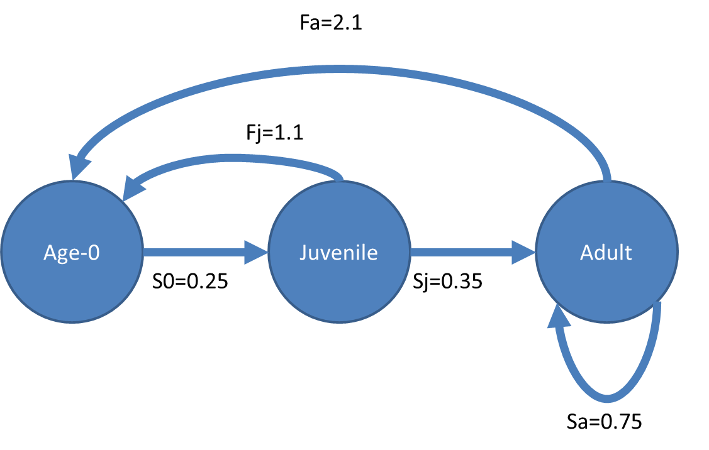
# per capita fecundity juvenile
Fj = 1.1
# per capita fecundity adult
Fa = 2.1
#survival age 0
S0 = 0.25
#survival juvenile
Sj = 0.35
#survival adult
Sa = 0.75We create the population transition matrix
trans_mtrx = matrix(c(0,Fj,Fa,S0,0,0,0,Sj,Sa),
ncol = 3, byrow = T)
#print it out
trans_mtrx## [,1] [,2] [,3]
## [1,] 0.00 1.10 2.10
## [2,] 0.25 0.00 0.00
## [3,] 0.00 0.35 0.75We create the population vector
#Number of animals in each age class
N0 = 100
Nj = 50
Na = 200
Nt = c(N0,Nj,Na)What is the population estimate for next year?
trans_mtrx %*% Nt## [,1]
## [1,] 475.0
## [2,] 25.0
## [3,] 167.5We can also simulate the population dynamics for more than 1 year. In this case we will simulate for 20 years.
# number of years to simulate
nyears<- 20
# Create a matrix to hold the output
output<- matrix(0, nrow=3, ncol=nyears)
# set the initial population
output[,1]<- Nt
for(year in 2:nyears)
{
output[,year]<- trans_mtrx %*% output[,year-1]# forecast from previous year
}
output## [,1] [,2] [,3] [,4] [,5] [,6] [,7] [,8]
## [1,] 100 475.0 379.250 412.8125 403.2156 407.4020 407.1475 408.3239
## [2,] 50 25.0 118.750 94.8125 103.2031 100.8039 101.8505 101.7869
## [3,] 200 167.5 134.375 142.3438 139.9422 141.0777 141.0897 141.4649
## [,9] [,10] [,11] [,12] [,13] [,14] [,15]
## [1,] 409.0419 409.9097 410.7315 411.5703 412.4060 413.2449 414.0849
## [2,] 102.0810 102.2605 102.4774 102.6829 102.8926 103.1015 103.3112
## [3,] 141.7241 142.0214 142.3072 142.5975 142.8871 143.1778 143.4688
## [,16] [,17] [,18] [,19] [,20]
## [1,] 414.9269 415.7705 416.6159 417.4630 418.3118
## [2,] 103.5212 103.7317 103.9426 104.1540 104.3657
## [3,] 143.7606 144.0529 144.3457 144.6392 144.9333R has several built-in functions for manipulating and evaluating matrices for population models we can perform an eigen analysis using eigen() function the first element in the list created by the function is the eigenvalue also known as lambda, the population growth rate lambda:
#eigen analysis of population transition matrix
eigen(trans_mtrx)$values[1]## [1] 1.002033## stable age distribution
eigen(trans_mtrx)$vectors[,1]/sum(eigen(trans_mtrx)$vectors[,1])## [1] 0.6265803 0.1563272 0.2170925